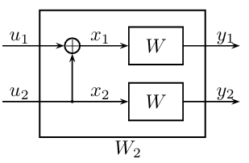

一、标准SC译码#
1. 准备工作#
经过之前的讲解，我们现在应该已经大概建立起关于极化码的印象，那就是它们是一类建立在二元极化核：
的递归操作之上的码。它们是线性码但并不是代数码，只有在SC译码（及其变体）下，才具有理论最优性。而SC译码具有特殊的顺序，为了建立对其原理的基本认知，本小节将介绍在极化码基本单元上的两个关键的推理问题，之前介绍的最小和SC译码算法的公式的正确性也能得到解释。
我们将使用大写字母表示随机变量（Random Variable），小写字母表示该随机变量的实现（Realization）。前者是一种数学上的抽象概念，而后者则是它在每次实验中对外表现出的具体状态。
1.1 两个关键问题#

上图展示了码长为2的极化码，其中随机变量\(X_1,X_2\)与随机变量\(U_1,U_2\)之间存在确定映射\(\mathbf{G}_2\)，与随机变量\(Y_1,Y_2\)之间存在随机映射\(W\)。考虑到码长为2的极化码实际上是任意码长极化码的基本单元，为了能够讨论更一般性的问题，我们对这个结构进行更一般化的阐释：

如上图所示，在最经典的场景下\(U_1,U_2\)是独立同均匀分布的二进制随机变量，后续的\(X_1,X_2\)以及\(Y_1,Y_2\)都是由它们生成的，并且映射关系也都是已知的。在这个结构中，Arikan重点关注了如下两个问题：
已知\(Y_1,Y_2=y_1,y_2\)，求随机变量\(U_1\)的条件概率分布；
已知\(Y_1,Y_2,U_1=y_1,y_2,u_1\)，求随机变量\(U_2\)的条件概率分布。
1.2 Arikan的第一个译码函数#
我们首先尝试解决第一个问题，其推理过程如下所示：
要计算\(U_1\)的条件概率分布，根据\(U_1=X_1+X_2\)首先应当分别计算\(X_1\)和\(X_2\)的条件概率分布；
\(X_1\)的条件概率分布可以通过\(Y_1=y_1\)计算得到；
\(X_2\)的条件概率分布包括两部分，第一部分根据\(U_2\)得到，第二部分根据\(Y_2=y_2\)得到。
具体来说，我们知道\(U_2\)服从均匀分布，因此\(X_2\)的条件概率分布直接由\(Y_2=y_2\)得到。设\(X\)和\(Y\)之间通过概率为\(p\)的比特翻转信道进行映射，那么\(\Pr(X_2=y_2)=1-p,\Pr(X_2=y_2+1)=p\)。同理当\(Y_1=y_1\)时\(\Pr(X_1=y_1)=1-p,\Pr(X_1=y_1+1)=p\)，代入上述推理过程得到：
为叙述简单起见未列出条件部分，请注意区分！
目前这个形式看起来是比较混乱的，可以将原问题进行一个简单变形：已知\(X_1,X_2\)的似然比分别为\(L^X_1,L^X_2\)，求\(U_1\)的似然比。首先我们将似然比转化回相应的概率分布。根据定义\(L=\log{\frac{P_0}{P_1}}\)以及\(P_0+P_1=1\)，有\(L=\log{\frac{P_0}{1-P_0}}\)；将左右两边取负号得\(-L=\log{\frac{1-P_0}{P_0}}\)；两边取指数有\(e^{-L}=\frac{1}{P_0}-1\)；进一步整理可得：
于是：
以及：
因此\(U_1\)的对数似然比为：
其实到这里就已经可以了，但人们在之前关于LDPC的研究中发现，这个式子还可以做一个有趣的变形。利用：
有：
import numpy as np
from matplotlib import pyplot as plt
x = np.linspace(-2, 2, 21)
plt.figure(figsize=(8, 4))
plt.plot(x, np.tanh(x), label="tanh(x)")
plt.plot(x, x, label="y=x")
plt.grid()
plt.legend()
plt.show()
从上图可以看出，\(\tanh(\cdot)\)是奇函数，并且在\(x\)的绝对值较小时有\(\tanh(x)\approx x\)，在\(x\)的绝对值较大时有\(|\tanh(x)| \approx 1\)，这解释了为什么在之前的最小和译码算法中可以使用：
来近似计算：
1.3 Arikan的第二个译码函数#
接下来我们求解第二个问题，其推理过程如图所示：

要计算\(U_2\)的条件概率分布，根据\(U_2=X_2\)首先应当计算\(X_2\)的条件概率分布；
\(X_2\)的条件概率分布包括两部分，第一部分根据\(X_2=X_1-U_1\)得到，第二部分根据\(Y_2=y_2\)得到；
\(U_1\)的值已知，\(X_1\)的条件概率分布可以通过\(Y_1=y_1\)得到。
对于\(u_1=0\)而言，二元组\((U_1,X_2)\)的条件概率分布为\(\Pr((U_1,X_2)=(0,y_1))=1-p,\Pr((U_1,X_2)=(0,y_1+1))=p\)。为方便起见、也为了和第一个译码函数形式统一，我们定义这个二元组关于\(X_1\)的对数似然比为\(L^X_1\)，从\(Y_2\)了解到的关于\(X_2\)的对数似然比为\(L^X_2\)，那么不难知道\(L^U_2=L^X_1 + L^X_2\)。对于\(u_1=1\)而言，同理不难得到\(L^U_2=-L^X_1 + L^X_2\)。这两类情况可以统一表示为：
推荐阅读：Bayes推理问题与置信度传播算法。纠错码领域经典的迭代式BP译码算法是对它们的近似实现。
1.4 非二进制推理问题#
Arikan的经典译码算法是基于二进制输入信道的，尽管在实际的通信系统中很少使用非二进制纠错码，但如果是出于理论研究的目的，极化码对非二进制场景也是具有最优性的，不过需要使用特殊的极化矩阵，否则不一定会发生信道极化，或者信道只会出现“部分极化”。
实际通信系统会通过Gray编码建立二进制比特和非二进制符号之间的映射
非二进制场景下的推导过程几乎完全一致，因为推理结构是不变的：
两个关键问题仍然是：
已知\(Y_1,Y_2=y_1,y_2\)，求随机变量\(U_1\)的条件概率分布；
已知\(Y_1,Y_2,U_1=y_1,y_2,u_1\)，求随机变量\(U_2\)的条件概率分布。
或者我们经过上一小节的推导，知道直接使用\(y_1,y_2\)表示计算结果会导致形式复杂，建议进行如下变形：
已知\(X_1,X_2\)的条件概率分布，求随机变量\(U_1\)的条件概率分布；
已知\(X_1,X_2\)的条件概率分布和\(U_1\)的取值，求随机变量\(U_2\)的条件概率分布。
唯一区别在于无法像对数似然比一样，只使用一个数就充分地表示一个概率分布，而只能将相应的随机变量取每个值的概率都列出来，构成一个概率分布序列，相应的计算过程也从实数运算变成了序列运算。我们不再赘述具体的计算过程，直接给出结果：
设随机变量取值于\(\{0,\ldots,q-1\}\)，所有关于随机变量及其取值的运算均模\(q\)，记\(X_1\)和\(X_2\)的条件概率分布序列分别为\(\mathcal{P}^{X_1}_{0:q-1}\)和\(\mathcal{P}^{X_2}_{0:q-1}\)，那么\(U_1\)对应的概率分布序列\(\mathcal{P}^{U_1}_{0:q-1}\)中每个元素的计算公式为：
在已知\(U_1=u_1\)的情况下，\(U_2\)对应的概率分布序列\(\mathcal{P}^{U_2}_{0:q-1}\)中每个元素的计算公式为：
上面这两个式子同样适用于\(q=2\)的二进制情况，感兴趣的读者可以代入自行验证。
这两个式子本质上分别是循环卷积和Hadamard积。
2. 连续消除译码方案#
在上文中，我们介绍了二元极化核上的Bayes推理问题以及它们的解法。作为SC译码算法的基本单元，它们是我们建立对极化码更深层次认知的关键，请务必掌握、透彻理解。接下来，我们将以它们为基础，给出Arikan的标准SC译码算法。
2.1 极化信道#
对于一个码长为\(N=2^n\)的极化码，设\(X_{1:N}=U_{1:N}\cdot\mathbf{G}_N\cdot\mathbf{B}_N\)，其中\(\mathbf{B}_N\)是尺寸为\(N\)的比特反转置换矩阵。随机序列\(X_{1:N}\)经过随机映射得到一个新的随机序列\(Y_{1:N}\)（实际上就是经过\(N\)个简单信道进行传输）。Arikan考虑的是如下问题：
已知\(Y_{1:N}=y_{1:N}\)，以及\(U_{1:i-1}=u_{1:i-1}\)的情况下，求随机变量\(U_i\)的条件概率分布。
从数学上来讲，任意两个（或两组）随机变量之间的条件概率分布，都可以被视作一个信道。因此，我们可以考虑这样一个特殊的信道：
它以随机变量\(U_i\)为输入、以随机变量\(Y_{1:N},U_{1:i-1}\)为输出。那么Arikan考虑的问题就是，在已知该信道的输出端具体取值的情况下，其可能的输入情况是什么？
我们称这些信道为：极化信道。
Arikan在他的工作中证明了，随着码长\(N\to+\infty\)，这\(N\)个极化信道的容量\(I(Y_{1:N},U_{1:i-1};U_i)\)要么接近\(1\)要么接近\(0\)，也即所谓的极化。这个现象将在下一节深入讨论，在本小节我们所需要关注的是如何求这些信道的转移概率。
2.2 译码二叉树#
对于第\(i\)个极化信道\(W^{(i)}_N(Y_{1:N},U_{1:i-1}|U_i)\)而言，直接求其转移概率矩阵是不可能的，因为这个矩阵形状为\(2\times 2^{N+i-1}\)，所有可能的输出情况数随码长\(N\)和索引\(i\)指数级增长。尽管无法求出其所有列，但我们可以准确地求出指定的某一列，这可以通过对极化变换\(\mathbf{G}_N\)进行Bayes推理得到，所采用的算法是置信度传播算法，其计算复杂度为\(\mathcal{O}(N\log{N})\)。
根据极化码的递归结构，我们可以从右到左，将第\(i\)层中间变量拆分为\(2^i\)个大小为\(N/2^i\)的树节点，从而构成一颗二叉树，如下图所示：
上一小节介绍的两个推理问题，实际上就是子树上的两个推理问题，其树状推理图如下所示，相应的计算方法均已给出（注意二叉树的左子节点指的是靠上的那个小节点，二叉树的右子节点指的是靠下的那个小节点）：
以\(N=4,i=3\)为例，条件概率分布\(\Pr(U_3|Y_{1:4}=y_{1:4},U_{1:2}=u_{1:2})\)的推理图为：
按照这种二叉树表示法，可以很方便地计算任意条件概率分布。
2.3 连续消除规则#
回到极化码的译码问题中来，接收端的任务是根据信道输出结果\(Y_{1:N}=y_{1:N}\)，对随机变量\(U_{1:N}\)的取值进行估计。Arikan提出了一种简单直接的做法，就是串行地从\(i=1\)到\(N\)，依次计算条件概率分布：
若是冻结比特，则直接获取已知的值\(\hat{u}_i\gets 0\)；若不是冻结比特，则执行最大似然判决：
回顾之前的最小和SC译码章节，其中介绍到，递归译码过程有一点类似于二叉树的左序遍历。实际上，该特殊的译码顺序，就来源于这里介绍的从\(i=1\)到\(N\)串行计算各概率分布的过程。
注意条件部分是估计值\(\hat{u}\)而不是真实值\(u\)，这是因为真实值对译码器而言是不可见的。
2.4 算法复杂度#
注意到，如果单独考虑每一次的运算，复杂度为\(\mathcal{O}(N\log{N})\)；该操作要执行\(N\)次，因此总复杂度为\(\mathcal{O}(N^2\log{N})\)。但实际上由于计算是从\(i=1\)串行地执行到\(N\)的，在相邻两步之间存在一些可以共享的信息。下图表示\(N=4,i=1\to 4\)的SC译码过程，相邻两步之间可以共享的信息使用黑线标注，需要重新计算的信息使用蓝色线标注：
不难注意到每一条有向边最多更新三次，因此总运算复杂度仍为\(\mathcal{O}(N\log{N})\)。
关于算法的空间复杂度，一般来讲我们认为是\(\mathcal{O}(N\log{N})\)，不过如果加以深度优化、剔除掉后续译码中再也用不到的信息，空间复杂度可以降低至\(\mathcal{O}(N)\)。